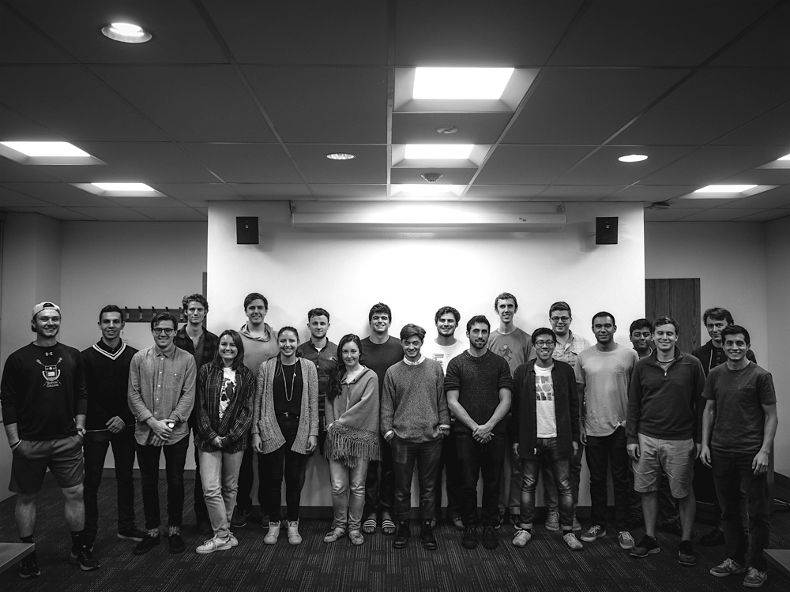
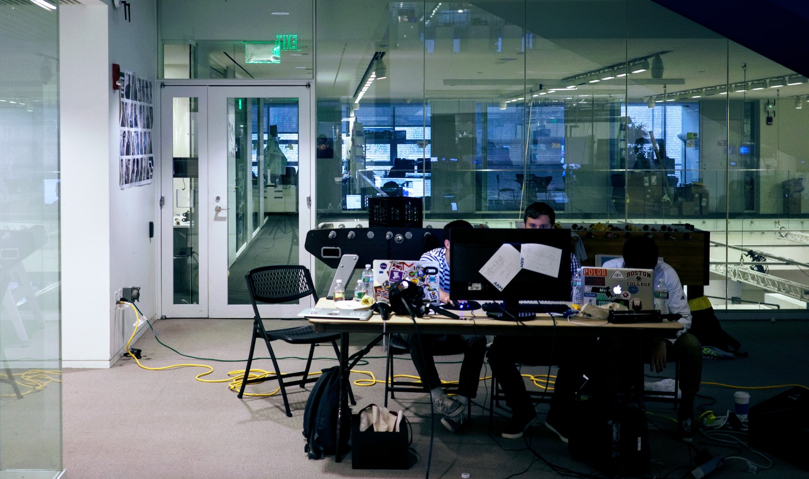

Joycestick
Overview
Joycestick is reimagining James Joyce's Ulysses in Virtual Reality. The project is under active development by a class of nearly 30 students from Boston College, MIT, Northeastern and Berklee School of Music. As the teaching assistant of the course developing Joycestick, I had the plan and vision for this project over a year prior to the first time the class met. Once development began, I served as the Engineering Lead and shipped both the MVP and second version of Joycestick. The project is currently on tour, stopping at various Digital Humaities and Joyce conferences around the world including Rome, Dublin, Toronto and Singapore and will be coming to Steam this year.
Why Ulysses?
My research advisor at Boston College in Digital Humanities, Prof. Joe Nugent is a Joyce scholar, so we've always had an interest in bringing the intricate world of Ulysses to a medium that holds so much promise for telling complex stories. Furthermore, Ulysses is very much so about a story about experience and imagery– all aspects that make the story an excellent candidate to try in VR. The current direction that Joycestick is heading breaks the story up logically by chapter and represents each through objects and images. These are translated into scenes that vary in degree of interactivity, and as the player moves through the scenes, an aspect of the story is uncovered and they feel rewarded.
Developing Joycestick
Working on Joycestick at "Reality, Virtually" Hackathon at the Media Lab at MIT.
The dev team for Joycestick comes from a diverse background. We have experience building applications for mobile, web, analytics and even embeded systems. But of course, no one (with the slight exception of myself) had ever touched Unity or built a video game. It was clear we had our work cut out for us and building the early versions of the game relied on our flexibiity as team, and being unafraid to scrap our progress at any time in favor of a more scalable and extensible approach.
Early on, this happened a number of times. As we began to explore a more object-oriented game architectures through design patterns, branching off in a new direction became essential. Some early Joycestick C# scripts include the following:
CalypsoMgr.cs manages the scenes in Joycestick modeled after the Calypso chapter.
Interacting with JoyceObjects is the key to progressing in Joycestick.
Coin.cs is an example of one JoyceObject
SoftFlicker.cs gives the gas lamps in the scene a realistic flicker.
Lessons Learned
The proccess of building an independent game (especially for a platform as new as Virtual Reality– we're developing for HTC Vive) is rarely a smooth one. Hiccups along the way are to be expected, and with Joycestick, we certainly hit a fair share of roadblocks. Working with a team of students who are enrolled in multiple other [hard] classes in addition to balancing social lives, clubs and sports is inherently difficult. We managed to make it work by scheduling small deadlines, delegating tasks and staying on top of our Trello boards. That being said, as hard deadlines rolled around, little sleep was had.
But whether shipping an ambitious project in Virtual Reality with CS students with no work/game engine experience, or a feature for a well-known piece of software with an experienced team of developers, similar issues arise. Even in its MVP state, I was extremely proud of the work that I saw done on Joycestick and look forward to what work continues to be done with it. In the meantime, I will be working on porting a lite version of Joycestick to mobile for Google Daydream.